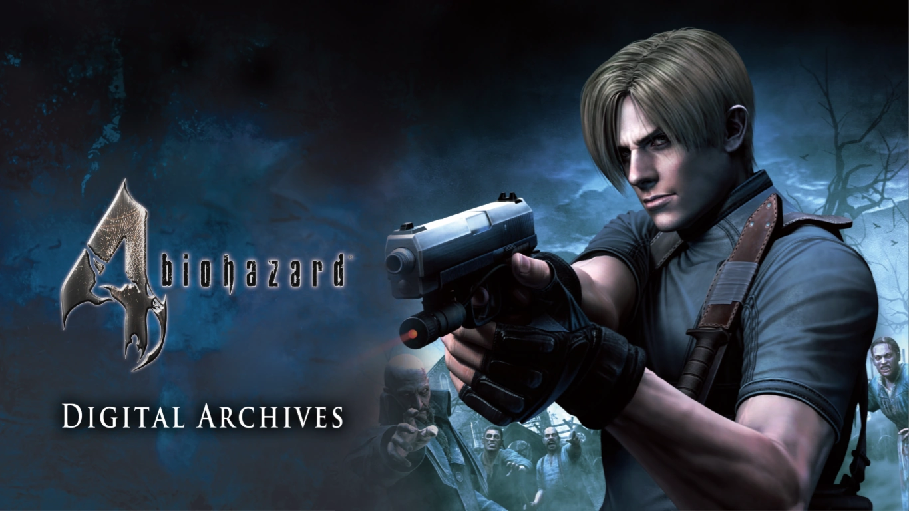

Resident Evil 4: Petualangan Horor yang Tak Terlupakan
Dipublikasikan Pada 13 Oktober 2024
Menghadapi kengerian dan misteri di dunia Resident Evil 4.
Resident Evil 4, dikenal di Jepang sebagai Biohazard 4, adalah permainan video horor sintasan dengan perspektif orang ketiga yang dikembangkan dan diterbitkan oleh Capcom. Sebagai installment besar keenam dalam serial Resident Evil, permainan ini pertama kali dirilis untuk GameCube di Amerika Utara dan Jepang pada Januari 2005, diikuti oleh rilis di Eropa dan Australia pada Maret 2005.
Sinopsis
Enam tahun setelah bencana biologis yang melanda Kota Raccoon, Leon S. Kennedy, salah satu penyintas dari insiden tersebut, kini berstatus sebagai agen spesialis di bawah komando langsung presiden Amerika Serikat. Dia ditugaskan untuk menyelamatkan putri presiden yang hilang.
Leon melacaknya hingga sebuah desa terpencil di Eropa, di mana dia menemukan sesuatu yang sangat mencurigakan tentang penduduk desa tersebut. Zombie spesies baru, yang dikenal dengan nama Ganados, muncul sebagai manusia yang dikontrol oleh individu lain melalui parasit yang disebut Plaga. Sepanjang perjalanan, Leon juga bertemu dengan teman-teman lamanya, termasuk Ada dan Krauser.
Karakter
- Leon Scott Kennedy: Seorang polisi pemula saat insiden di Kota Raccoon, Leon kini telah berkembang menjadi agen yang bekerja langsung di bawah presiden.
- Ashley Graham: Putri presiden Amerika Serikat yang diculik dan menjadi target penyelamatan Leon.
- Ingrid Hunningan: Seorang koordinator misi yang memberikan dukungan dan bantuan kepada Leon selama misi penyelamatan berlangsung.